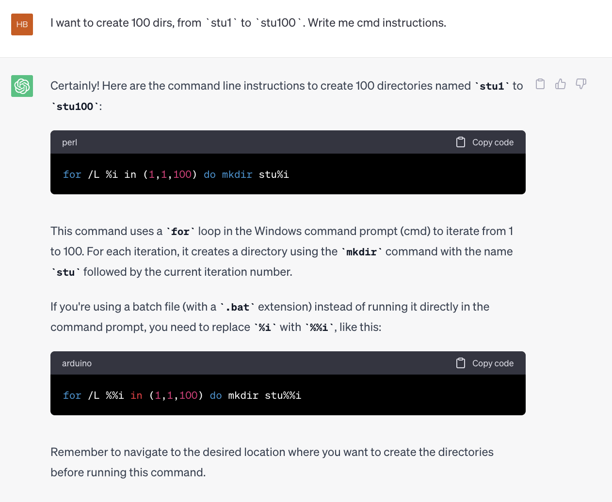
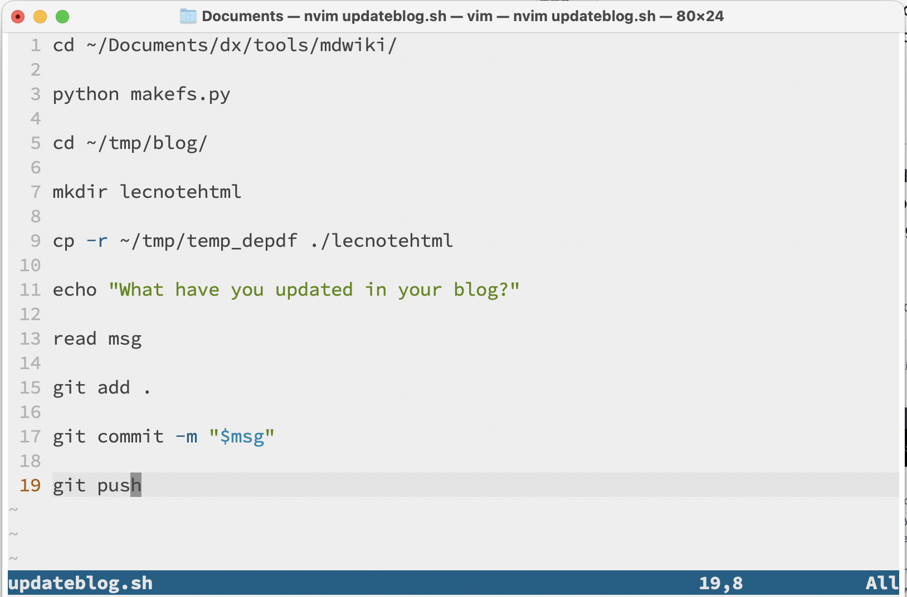

$$ \Huge \textbf{The Command Line} $$
$$ \boxed{ \overbrace{\textit{degaokaolization}}^{\small{去高考化}} \text{ Discussion Group | Topic 01}} $$
In today's world, modern technology, particularly computers, has empowered us to achieve incredible feats. However, despite their capabilities, we have noticed that some students view operating computers as mere "magic spells". This mindset can lead them into trouble when confronted with more complex challenges.
The way we usually operate our computers is by mouse and keyboard - by dragging the clicking the so-called 'window' stuff on your screen, and sometimes type something into it. This is called a GUI interface - GUI stands for Graphical User Interface - things are perfectly laid to you over the screen. When a window comes up, some possible operations are now clearly in front of you. Even if you haven't seen the window before, you will be instantly clear what it means and respond quickly and accurately.
It also suggests that there is another different way of operating computers. Shortly speaking, by purely typing. That is, type some commands into the computer and let them give us the result. This is called CLI interface - CLI stands for Command Line Interface.
GUIs were a hot topic in the early 1980s. With GUI, techical companies can easily permote their techical product to more customers. By packing many features into a button with a single click, they can of course hit the markets.
This leads to a weird question: Why do CLIs exist, even in today? Intuitively, the behavior of CLIs are somehow confused, and of course, not easy to use.
But is it true? We will start to investigate this problem in this topic.
If the operating system you are using is Linux or MacOS, maybe Missing Semester Series is better for you to watch and follow. But if you are using Windows, continue reading.
CLI still exists in Windows. In fact, in higher versions of Windows, there are 2 CLIs. In this section, we will take a glance at the relatively primitive one, the CMD program.
The way to launch the shell is simple: press WINDOWS+R, type in cmd. Then a window in black will appear with words
C:\Users\Admin\> _
This means that your current working directory is under the path C:\Users\Admin. Files and changes you make will reflect to this directory by default.
C:\Users\Admin reflects that this is equivalent to starting File Explorer, or My Computer, click on the disk C icon, then Users folder, then Admin folder. You are currently working on this directory.
Like in file explorer, you are curious about how to go around this stuff, that is navigating in this shell. But before doing this, we will watch how this launch applications.
First let's run a program just under the path. If you don't have a proper program to run, I have one application named hello.exe that can print "Hello World" to the screen.
Type in
hello.exe
and maybe you will see Hello World displaying on the screen. If you see an error message, maybe you have mistaken the place for this program.
But what if I want to open an application at another folder? This requires us to have a good command of navigating between folders.
Change Directories. Use cd to navigate between directories. cd foldername to enter a folder, cd . to come into the current one, cd .. to back to the upper level. Also, we can cd path/to/file/name/../name, combining them together.
Getting Help. Command line tools are designed to show help. By attaching an extra flag -h(Windows 7 and after) or /h(Windows XP), you will receive the help message.
Now enter calc.exe in cmd. To our surprise, it started Calculator. But we don't have a calculator under this directory! Why?
The answer is in the PATH environment. When you typed a line of text, the system firstly finds the application under this folder, then, it starts to search in the PATH folders. There are many critical pathes in your system, like C:\Windows\System32 which has tons of applications in it. You may find calc.exe in this folder.
This is basically a lazy idea - we don't have to change the directory every time we want to execute a file, which is good!
Another advantage of this design is that we can leave more options to users. For example, one user may installed the executable file a.exe to C:\Program Files, while another user installed it to D:\Program Files. This kind of techique will make the application more easier to access.
However, there are some shortcomings of this pattern. If you have two applications with the exact name included in the PATH, then it will be confusing for you. So in Unix system, there are no such things as global variables. Instead, the PATH is set for each terminal. Every time you start a terminal window, the PATH sets to its initial state. It has a startup script configuring the PATH and other stuff.
Listing Files in a directory. Want to know what's in your current directory? You may enter dir -s, where s stands for show.
Move file. Use move command. If you want to move the file from C:\first to D:\second, you should say move C:\first D:\second. Both two arguments can be file or directory.
There are other bunch of commands operates this way. Like copy, rename, and it's not hard to guess what to pass in, based on move command.
Tip. Don't afraid of mistakes. If you encounter errors, it's totally fine. Don't be shocked or even overwhelmed by errors! In fact, having errors is normal in learning!
Shutdown means turn off your computer. Maybe you have dreamed of turning off your teacher's computer in a boring lesson so that he would have no slides to continue the lecture.
But it's risky to rush up and plug off your teacher's computer directly. Is it possible to set a timer, when the timer reached 0, the computer will shut down automatically?
Yes! shutdown can do this exactly. Type in shutdown, and you will get the help message.
What's more, shutdown command can even shutdown computers remotely - of course in your local web. There's also help message in it.
To kill a task is like clicking the cross(x) button on your window. But some applications like 极域电子教室 will not offer you that close button. But we can still kill the program, by using taskkill command.
Normally, the name for 极域电子教室 is StudentMain.exe. You can execute
taskkill /f /im StudentMain.exe
The option is
/f means force quit;/im means that it searches by name.This command is also helpful when some buggy programs is launched. We will see some examples in the following lectures.
To do this, we can use echo command. For example: echo "Hello World".
You can execute echo off to disable the C:\Users\Admin and only leave the blinking cursor. This is extremely useful in batch files.
Maybe your idea is that only displaying texts is trivial. That's true. But what can be not so trivial is that actually write the text into a file!
For example:
echo hello > a.txt
and a a.txt will appear in your directory. Great! But why is it happening?
The program of this form basically has two primary “streams” associated with them: there input stream and output stream - since that's pretty like an algorithm - reads in from input and writes out to output. When the program tries to read input, it reads from the input stream, and when it prints something, it prints to its output stream.
Normally, a program’s input and output are both your terminal. That is, your keyboard as input and your screen as output. However, we can also rewire those streams!
But using the >, we changed its output stream(short for ostream) to a file a.txt, hence it outputs its data there.
Likewize, we have < file for read in from file. You may try it yourself.
Let's say you want to list all the files in a directory and then search for a specific string within the output. Here's something you might do:
First, type in dir to get all of the file; Second, copy the output and use find command, with args you copies earlier pasted.
But here's another idea - working together through pipe, that is a small vertical bar |. You can do this:
dir | find "specific string"
That is directly passing the result of dir program, and pass in to the input of find program.
Great! You have now have a basic idea what a command line is, and mostly, you can automate things really fast!
Saving these instructions in the suffix .cmd will make it possible to run on click - typically your Anti Virus softwares will give a warning on this, for this is usually unbounded and sometimes can cause critical damage to your computer. But sometimes this works really fast, saving both time and energy.
But what if I want to create 100 dirs, from stu1 to stu100. Is there a loop control or something? Yes of course! You can search with keyword cmd loop to search engines! Or asking ChatGPT is also a good idea!

This is the first language you learn. And this will give you the power to organize computers better. If you are about to use the Unix system like Linux, you will find these techiques are needed badly.
MacOS is a Unix-like system, and my daily routine can't be done without shells. For example, here is the shell script to update the Lecture Notes:

If you are a Computer Science(CS for short) student, then maybe later you will find using Unix-like systems with fun and efficiency. Then it is the time watching Missing Semester Series by MIT OCW(Open CourseWare).
$$ -\mathscr {E}\text{nd of the note}- $$